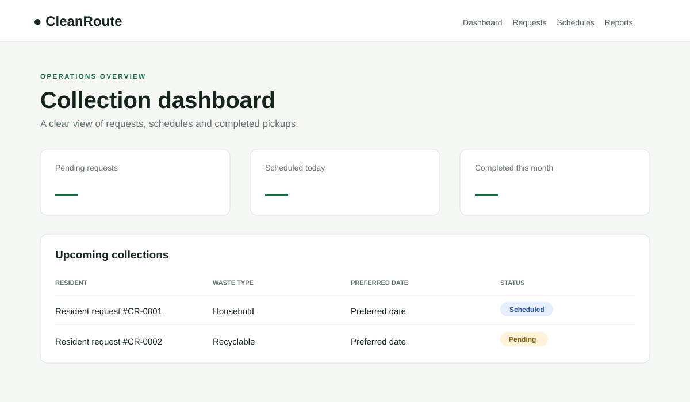

BUSINESS WORKFLOW SYSTEM01
FixFlow
A repair workshop management system that connects customer intake, repair jobs, estimates, technicians, parts, and payments in one workflow.
C# / .NET DEVELOPER · NIGERIA
I’m Muhammad, a developer focused on building useful web applications with C#, ASP.NET Core, MySQL, and modern frontend fundamentals.
HELLO, I'M
C# · ASP.NET Core · MySQL
SELECTED WORK / 01
Three practical applications that demonstrate how I approach workflows, data, and user-facing software.
A repair workshop management system that connects customer intake, repair jobs, estimates, technicians, parts, and payments in one workflow.

A role-based collection management application for residents, collectors, and administrators.
Interface preview from the project repository.

A small-business workspace for products, stock, sales, customer records, expenses, and operational reports.
Illustrative interface preview; see repository for the application source.
A LITTLE ABOUT ME / 02
I enjoy turning everyday operational challenges into software that is clear, practical, and easier to use.
My current focus is C# and ASP.NET Core web development. I build with Razor Pages, work with relational data in MySQL, and use HTML, CSS, and JavaScript to create responsive interfaces.
My projects have helped me work through real application concerns such as user roles, data validation, business rules, inventory changes, and multi-step workflows. I keep learning, improving the code, and documenting what I build.
TECHNICAL TOOLKIT / 03
A focused skill set for building and improving full-stack web applications.
Application logic, page handlers, validation, and business workflows.
Relational data design, queries, relationships, and application persistence.
Responsive page structure, interface styling, and browser interactions.
Source control, debugging, and a practical project workflow.
Skills are presented around the tools used in the projects above. This is a project-based portfolio, not a list of professional certifications.
LET'S CONNECT / 04
I’m open to junior developer opportunities, internships, and remote roles where I can contribute, learn, and grow with a team.